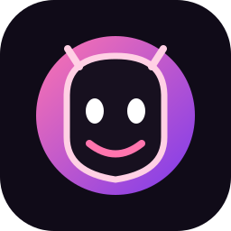

Acesso oficial
Boneco do Abismo
O Abismo
no seu bolso.
Abra este site no Safari e adicione o Boneco à Tela de Início. Sem APK, sem criar outro site e sem instalar nada pela App Store.
Instalar no iPhone
É rapidinho. Faça estes passos no Safari do iPhone.
1
Abra no SafariUse o botão de compartilhar do Safari. Se estiver em outro navegador, abra este mesmo link no Safari.
2
Toque em “Adicionar à Tela de Início”Na folha de compartilhamento, procure a opção. Se não aparecer, role a lista para baixo e confira “Editar Ações”.
3
Confirme em “Adicionar”O ícone do Boneco aparecerá junto dos seus aplicativos. Toque nele para abrir em tela cheia.
Abrir o painel do Boneco
Para usar o painel local, primeiro abra o servidor do Boneco no Windows. Conecte o iPhone e o PC à mesma rede Wi-Fi e informe o endereço local do PC, por exemplo http://192.168.1.50:9393 (use o IP real do seu PC). O servidor precisa aceitar conexões da rede local e o Firewall do Windows pode pedir autorização. O site público não inicia o servidor por você.
Informe o endereço local do servidor no Windows. Os dois aparelhos devem estar na mesma rede Wi-Fi.
Boneco do Abismo · Site otimizado para iPhone
Este site não pede senha nem solicita instalação de perfil no iPhone.
Este site não pede senha nem solicita instalação de perfil no iPhone.